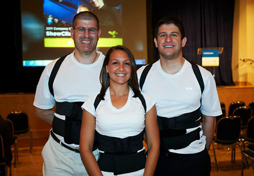
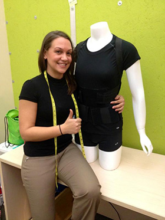
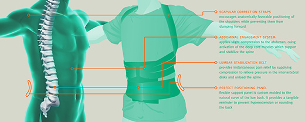
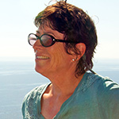

Babs Carryer speaks to the importance of engineers learning entrepreneurship and shares a story from her years teaching at Carnegie Mellon University.

Kelly Collier (center) took Babs Carryer's entrepreneurship class at Carnegie Mellon University as a sophomore biomedical engineering major. She is now the CEO of startup ActivAided Orthotics, along with Dr. Gary Chimes, Chief Medical Advisor (left) and Joshua Weiner, Chief Financial Advisor (right).
Babs Carryer
Adjunct professor of entrepreneurship, Carnegie Mellon University
Blogger: NewVenturist
Entrepreneur: LaunchCyte
Instilling an entrepreneurial mindset in undergraduate engineers is essential if we want our bright young talent to innovate and then productize those innovations to better mankind. Tuition at top engineering schools is close to $200,000. For that, we, the American people get the best minds and the best ideas. But not all ideas from engineering students make it into the real world. In fact, most ideas never make it past the class deadline. Prototypes, solutions, disruptions sit on the shelf because they were designed for an engineering class not as a potential business venture. How to solve that is to integrate entrepreneurship into the fabric of the engineering program.
But not all engineering programs include entrepreneurship at all, let alone as a core competence. Entrepreneurship seems well integrated in a handful of schools: Johns Hopkins, University of Michigan, and Stanford, which has recently opened Epicenter, a National Science Foundation-funded initiative to “create a nation of entrepreneurial engineers.” But for most engineering schools, entrepreneurship is an afterthought, something taught out of the business school where engineers, those who dare, brave the walk across campus to a class that might change their lives – or our lives.
I have taught entrepreneurship to engineering undergrads at Carnegie Mellon University (CMU) for six years. For three years I have taught entrepreneurship to graduate engineering and other technical students (the class is cross-listed with the School of Computer Science). CMU is supportive of entrepreneurship, but it’s a far cry from having entrepreneurship integrated into the program. My two classes are the only entrepreneurship classes offered in CMU’s engineering school, the Carnegie Institute of Technology (CIT). My classes are electives, so I get only those students who are either already determined to become entrepreneurs, or those who are exploring what entrepreneurship is all about.
Teaching entrepreneurship to engineers is challenging. For most of them, including Ph.D. students, my entrepreneurship class may be the only “business” class they have, or ever will, take. So, my charge is to give them an overview that excites them and that stimulates innovation and commercialization. No one can really teach entrepreneurship; I can’t make someone an entrepreneur who doesn’t have it in them already. But, I can unleash the entrepreneur within. This has resulted in some astonishing results.
Kelly’s story
Kelly Collier is CEO of startup ActivAided Orthotics. It’s an early stage company just getting off the ground with a product, a distributor, and a promising future. Kelly didn’t know that she was destined for the entrepreneurial life. As a sophomore at CMU, Kelly was proud to be studying biomedical engineering. But, she realized that she had other interests on the business side. She wanted to know how engineering fit into the commercial world. So, while it was hard to fit into her overly busy schedule, she embarked upon a business minor. As a junior, she ended up in my “Technology-Based Entrepreneurship for CIT” class because the Monday night entrepreneurship for engineers class happened to fit her schedule. But she actually had to look up the word “entrepreneurship” in Wikipedia because she didn’t know what she was getting into. “Fate,” she assures me in a recent discussion, “landed me in the class!” She tells me about her experience the first day in class,
“You give this entrepreneurship test [the test is really an assessment developed by an insurance company long ago; it’s not a test but it is a fun activity and it can reveal a bit about who people really are]. I never thought of being an entrepreneur. But I was pleased and shocked that I scored appropriately to be an entrepreneur.”
As the class continued, Kelly realized a lot of things about herself:
“I started thinking retrospectively about who I was and what I wanted. I realized that I had always had certain qualities that are characteristic of an entrepreneur. And there were some big things: I was different than engineers; I had a high-level view of things. I saw that one change affects all the systems, engineering functionality and market feasibility. I have such curiosity, and want what I do to fit in the world in a realistic and useful manner. I am willing to take risk, and I have the motivation and drive to do it. Now I realize that you need those qualities if you are going to spend 100 hours a week working on a venture. For me, the class was a venture in self-discovery. I learned a lot about myself.”
Kelly walked out of entrepreneurship class in December 2010 determined to chart a course that led to a startup. She began to look at her classes through a different lens:
“In class, you might build this cool thing, but it may not be feasible. Or, I might see someone else’s project that is brilliant, but they are not thinking about taking it forward. We move from class to class, from project to project.”
As a senior, Kelly started a yearlong capstone project class. Kelly and her teammates spent the whole first semester identifying the problem that they wanted to solve. Kelly didn’t have a particular idea but she did have a medical problem. As an athlete, in swimming and triathlons, she had back pain. And she had never been able to solve her back pain with anything that worked with her life style. The team’s search took them to Dr. Gary Chimes at the University of Pittsburgh Medical Center (UPMC). Dr. Chimes is a physical medicine and rehabilitation physician. Dr. Chimes had an idea for a product. He sees patients day in and day out with back pain, and he had been thinking for a long time about a product that people could wear in everyday life or during activities that would help with their back pain, both in terms of symptoms and correcting the root cause. His vision was a garment, a kind of vest that people could wear to both alleviate immediate pain and help posture longer-term. This back brace vest became the team’s project.

During the spring semester, the CMU team built the prototype and tested it. By the end of the semester they had something that they were proud of; they knew they would get an A. They showed the product to Dr. Chimes. “He was ecstatic,” Kelly relates. Dr. Chimes apparently gave the team a motivational speech about opportunity.
“He wanted to start a company and wanted us to join him. ‘We can’t let this go.’ And that really got me.”
Just a week later, during commencement, President Cohon’s speech was partly about entrepreneurship. He announced a new fund for alumni, called the Open Field Entrepreneur’s Fund (OFEF). Kelly recounts:
“I felt that he was talking directly to me. “I got out my phone and signed up on the OFEF site to get more info on the spot. It was totally fate.”
Kelly had committed to a Ph.D. program at a leading engineering school. She had gotten as far as looking for apartments with a roommate. And three of her class teammates thought they might stick with the back brace project for a while. Since Kelly was from the Pittsburgh region, she decided to stay for the summer before leaving for school. Her original idea was that she would pass the project off to the remaining three when she left because she knew that she couldn’t do a startup and a Ph.D. at the same time. But it didn’t work out that way:
“We lost one engineer in the first month, another by the second, and the final one during the third month. By the end of the summer, it was just me.”
But things were going well for the startup. Kelly had immediately taken a leadership role in the team. She wanted it to succeed, and she wanted it badly enough to defer her Ph.D., against her parents’ wishes. During the summer, she learned a lot, “I got to where I could build the product.” She incorporated as ActivAided Orthotics. She set out to raise money to test the vest:
“Fall 2011 was my first series of big rejections. I got rejected from a regional business competition and a local economic development organization. Everybody told me what was wrong with my business model, so I worked really hard to fix that. I had to find how to make the leap from having a cool product to having a real, profitable business.”

Kelly found advice and mentoring at Project Olympus, the CMU initiative to encourage and support entrepreneurship across campus. Then, she was accepted into Pittsburgh’s incubator, AlphaLab, for the January 2012 session, and that proved to be “a game changer.” Kelly used the cash to build out her team, which now numbers three full-time and one part-time. She also tested the product. Kelly tells me, “We were like a software product in that we could rapidly iterate our design.” Over the next few months, the team ironed out usability issues. By the end of May, they launched the product. They started getting revenues from beta testers, and in July they started selling the product commercially for $279.
ActivAided has partnered with Durable Medical Equipment (DME) distributor, Elizur, to market the product. “They found us,” Kelly announces. “Elizur has a suite of sports products and they had a gaping hole where we fit in.” Elizur has a network of thousands of doctors and clinics. The ActivAided vest did not have to be approved by the FDA. There is an existing insurance code that can be used for reimbursement. To date they have sold about 70 vests, including for beta tests. Kelly is looking forward to ramping up sales and has moved into a new space. She has raised additional funds from economic development organization, Innovation Works. And Kelly has big plans for the future:
“Our first product is medically oriented. It’s for recovering from a back injury. It’s reimbursed by insurance. It’s a complicated garment and it costs a lot. But our second product is more for everyday use. 70% of the world that has back pain, and I want to help them.”
Kelly’s thoughts on entrepreneurship in engineering
For Kelly, the entrepreneurship class opened up a possibility that she would not have found otherwise. She realized that most of her classmates were not entrepreneurially inclined. They were great engineers but as soon as she approached them about commercializing technology and building a venture, then it wasn’t about engineering anymore, and they were not interested. Kelly notes that there are two types of engineers: natural and taught.
“Both are problem solvers. Some people are more creative and natural problem solvers. Taught problem solvers are great at school, but they can execute only within the box. In an unfamiliar situation, natural problem solvers have the creative ability to make it up as they go along and still produce results.”
As a teacher of entrepreneurship, I think that it is important to recognize the value of entrepreneurial training to both types of engineers. While it may be more immediately rewarding to teach the natural problem solvers because they are the ones perhaps more likely to start companies, we must remember that we are trying to change a mindset, to introduce new, innovative thinking into core curriculum. If we are ever going to solve real world problems, then we need to teach those real world problem solving skills to all engineers.
Kelly thinks that it’s important and valuable to integrate entrepreneurship into engineering. She believes that classes like mine can ignite the spark to start something in people who might not know yet that they can be entrepreneurs. She also believes that every engineer can benefit by being exposed to entrepreneurship even if they don’t become one.
Final thoughts
Kelly’s experience is just one example of how a young engineering student can come up with an idea to solve a real problem in the real world. As a nation, we should embrace the hunger and desire that these young folks exhibit by giving them the chance to discover entrepreneurship within the very heart and soul of the universities that they attend. Here’s my challenge: entrepreneurship integrated into every engineering program in the US. And while we are at it, why not in other technical disciplines like computer science?
We’d be doing the country a favor by encouraging and developing innovation; we’d be doing the students a favor by unleashing the entrepreneurs within. And we’d be doing ourselves a favor by finding innovative solutions to problems that we face!

Babs Carryer is a blogger (NewVenturist), entrepreneur (LaunchCyte), and teacher of entrepreneurship at Carnegie Mellon University